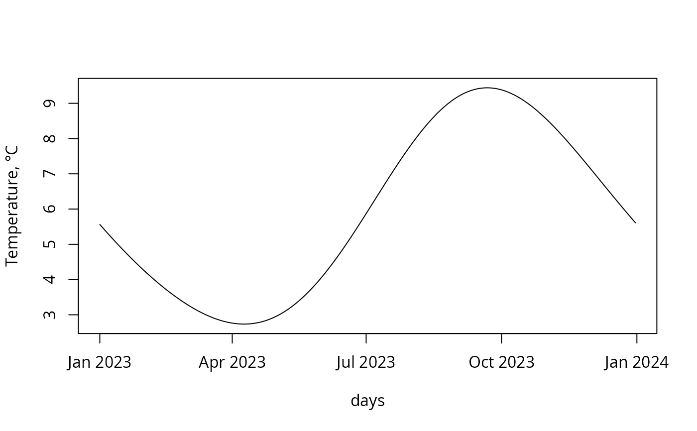

Get the undisturbed (median) value of ground temperature at different depths at a specified time leveraging Modified Ground Temperature Double Harmonic Model (MGTDH-model).
Usage
mgtdhid(id, tau = 1440L, depth = 2.4)
mgtdhidt(tau, id = 28434L, depth = 2.4)
mgtdhgeo(lat, lon, tau = 1440L, depth = 2.4, use_cluster = FALSE)
mgtdhgeot(tau, lat = 57, lon = 57, depth = 2.4)Arguments
- id
weather station unique identifier. Only identifiers from
meteosdataset are accepted. Type:assert_integer. Formgtdhidtacceptable length is1.- tau
time point for which it is necessary to obtain the value of the soil temperature; it can be specified as an integer, representing the number of hours that have passed since the beginning of the year, or as a value of
POSIXcttype. Type:assert_count, orassert_posixct. Formgtdhidacceptable length is1.- depth
depth at which the ground temperature is calculated, [m]. Type:
assert_number.- lat
latitude of the geographical location where the value of soil temperature needs to be determined, [DD]. Type:
assert_double. Formgtdhgeotacceptable length is1.- lon
longitude of the geographical location where the value of soil temperature needs to be determined, [DD]. Type:
assert_double. Formgtdhgeotacceptable length is1.- use_cluster
utilize functionality of parallel processing on multi-core CPU. Type:
assert_flag.
Value
Undisturbed (median) ground temperature value calculated with
the MGTDH-model, specifically for the location of the
user-specified meteorological station, at specified depth, and time,
[°C].
Type: assert_double.
Details
The MGTDH-model is a modified solution of the thermal conductivity equation for soil and can be expressed by the formula
$$ t\left( \tau, d \right) = \beta e^{r_1} \cdot A_1 \cos(2 \pi \omega \tau + r_1 - P_1) + \beta r_2^{A_2 \cdot d} \cos(4 \pi \omega \tau + r_2 - P_2) $$
where
- \(t\left( \tau, d \right)\)
undisturbed (median) ground temperature [°C] at specified depth \(d\) [m], and time \(\tau\) [h].
- \(\tau\)
time point (
tau) calculated in hours since the beginning of the year, [h].- \(d\)
depth (
depth) at which the ground temperature should be calculated, [m].- \(\beta = -1\)
shift constant, [].
- \(r_1(d) = -1000 d \sqrt{\frac{\pi \omega}{\alpha_s D}}\), \(r_2(d) = r_1(d) \sqrt{2}\)
temperature diffusivity factors, [].
- \(\omega = \frac{1}{8760}\)
rate of rotation of the Earth, expressed with an accuracy equal to the inverse of an hour, [h⁻¹].
- \(\alpha_s\)
soil diffusivity, [mm²/s].
- \(D = 86400\)
constant that represents the number of seconds in one day, [s/day].
- \(A_1\), \(A_2\)
harmonic temperature amplitudes, [°C].
- \(P_1\), \(P_2\)
phase shifts, depending on the geographical location, [].
Soil diffusivity, \(\alpha_s\), harmonic temperature amplitudes,
\(A_1\), \(A_2\), and phase shifts \(P_1\), \(P_2\) are
geographically dependent parameters which values were established for each
weather station listed in meteos-dataset.
For the convenience of using the MGTDH-model, several interface
functions have been provided. Each function generates a vector of type
assert_double as an output.
The mgtdhid and mgtdhidt functions are used to obtain
ground temperature data from specific meteorological stations.
The functions mgtdhgeo and mgtdhgeot provide ground
temperatures at any geographical location, but note that their usage is
primarily limited to the Northern Asian part of Eurasia, as most
meteorological stations and parameters for the MGTDH-model are
established there. Ground temperature at the specified location is obtained
by linear interpolation using barycentric coordinates formed in the system
of the three nearest meteorological stations.
References
Lu Xing & Jeffrey D. Spitler (2017) Prediction of undisturbed ground temperature using analytical and numerical modeling. Part I: Model development and experimental validation. Science and Technology for the Built Environment, 23:5, 787-808, doi:10.1080/23744731.2016.1258371 .
Examples
library(pipenostics)
# Let consider the next geographical positions:
lat <- c(s28434 = 56.65, s28418 = 56.47, s23711 = 62.70, ControlPoint = 57)
lon <- c(s28434 = 57.78, s28418 = 53.73, s23711 = 56.20, ControlPoint = 57)
# * ground temperatures at first three locations on 02 March 2023
# at depth 3 m:
mgtdhgeo(
head(lat, 3), head(lon, 3), tau = as.POSIXct("2023-03-02"), depth = 3
)
#> [1] 4.184279 4.767883 2.930190
# * it is the same as obtaining ground temperatures from weather stations:
mgtdhid(
id = c(28434L, 28418L, 23711L), tau = as.POSIXct("2023-03-02"), depth = 3
)
#> [1] 4.184279 4.767883 2.930190
# * undisturbed ground temperature plot at Control Point:
days <- as.POSIXct("2023-01-01") + 3600 * 24 * (seq.int(1, 365) - 1)
plot(
days,
mgtdhgeot(days, lat[["ControlPoint"]], lon[["ControlPoint"]]),
type = "l",
ylab = "Temperature, °C"
)
